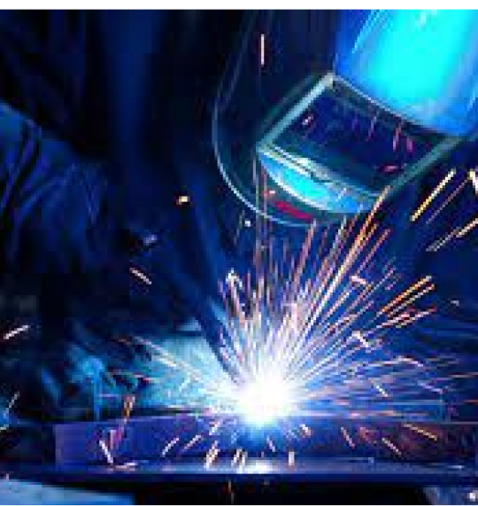
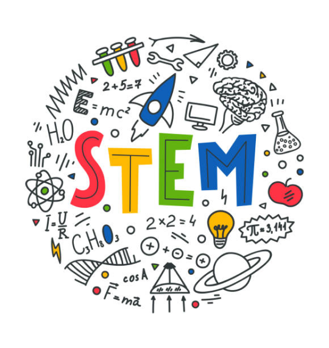
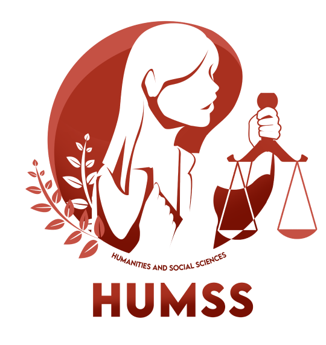

MNMN High School is now offering a
specialized welding program
called the Structural Metal Arc Welding (SMAW) strand, providing students with hands-on training and expertise in the field of welding
MNMN High School is proud to introduce a new educational track
focusing on STEM (Science, Technology, Engineering, and
Mathematics), equipping students with essential skills and knowledge
to thrive in the modern technological landscape.
MNMN High School, students can also now enroll in the Humanities and
Social Sciences (HUMSS) program, a comprehensive strand that
nurtures critical thinking, creativity, and a deep understanding of
human society and culture.
Joining the TVL (Technical Vocational Livelihood) program at MNMN
High School opens doors to practical skills and specialized training
in various fields such as automotive, culinary arts, and computer
technology, empowering students to excel in their chosen vocational
paths.



Smaw
Stem
Humms
TVL
Strands Offers